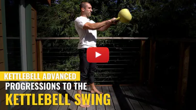

B614 · Spice Up Your KB Swing With These Progressions
Hi {first_name},
Kettlebell swings have got to be one of my all-time favorite, power-generating movements. The benefits I experience consistently leave me feeling solid and explosive afterwards. If you are reading this, then I'd imagine you too enjoy the swing, and are interested in ways to advance such a great exercise.
Ways to progress such as:
The swing progressions in this week’s video will not only tax your muscles differently compared to the normal swing, they’ll also keep your brain active to coordinate everything. Movements like these progressions help you develop a nervous system more capable of quick, athletic movements.
Watch the ~4 minute video here and give these progressions a try.
 I hope you enjoy this one and keep training intentionally, Mike Salemi |